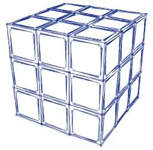

Cubo 3x3x3

O objetivo desse guia é introduzir os "segredos" ou "leis" do clássico cubo de Rubik (3x3x3) permitindo a sua solução sem a necessidade de decorar qualquer seqüência de movimentos (sem algoritmos).
Guia: Entendendo e Resolvendo o Cubo de Rubik sem Decorar
Se preferir veja a versão em PDF